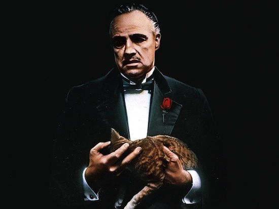
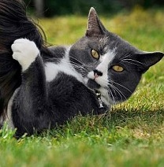
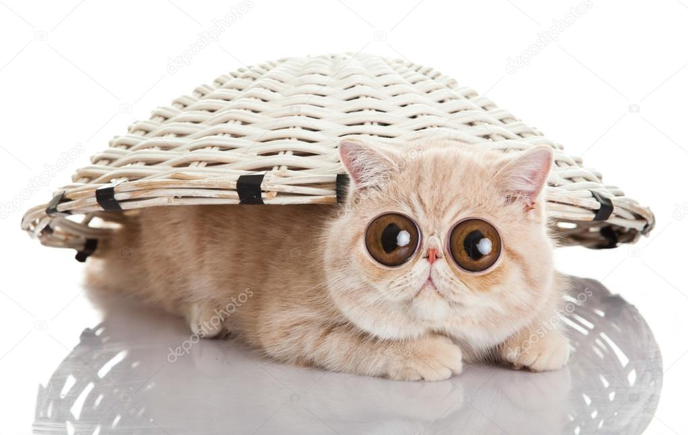
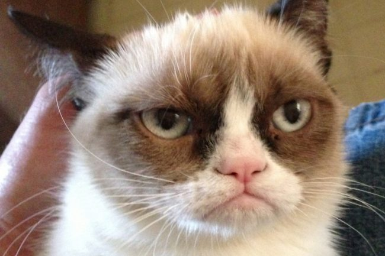
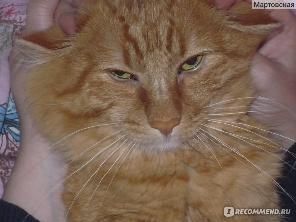
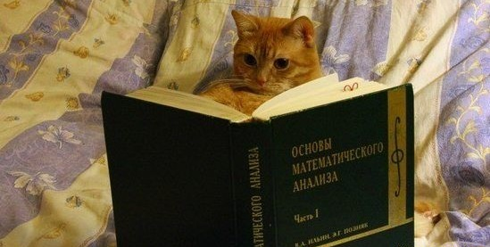
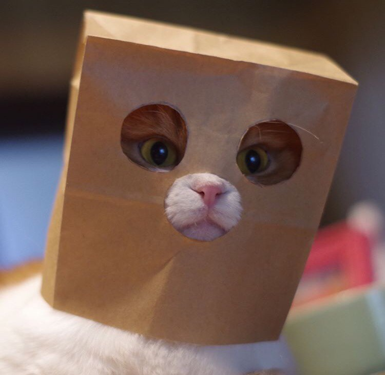
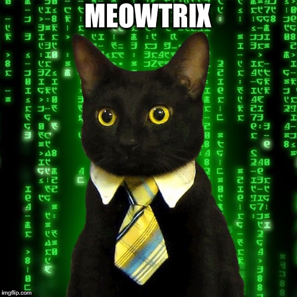
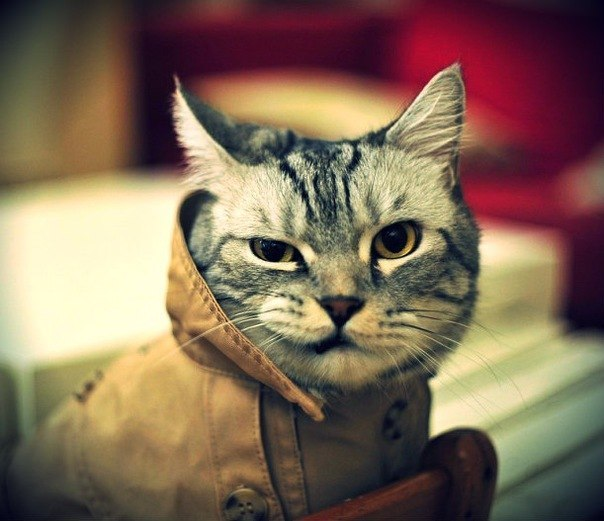

Маурицио
Возраст: точно не известно
Порода: бродячая
Пол: прекрасный
Болезни: нет
Статус: грустит без хозяина
Важно знать: никто не знает почему, но
эта кошка очень сильно привязалась
к Дону Корлеоне, и он тоже, что достаточно странно и
вступает в резкий контраст с
его образом главы мафиозного клана. Ей достаточно
тяжело переживать смерть хозяина, но
ей необходим новый хозяин, потому что Маурицио
очень нежная и ласковая, но помните, что
она может мурлыкать так, что будет заглушать
вашу речь, слишком уж громко у неё это получается.
Относитесь к ней с уважением, иначе она не
побрезгует вцепиться вам в самое больное место и тогда
вам не поздоровиться.
10000000000000$
 Мудрец
Мудрец
Возраст: 3 года и 3 месяца
Порода: скоттиш-фолд
Пол: сильный
Болезни: не замечено
Статус: думает о хозяине
Важно знать: вдумчивый кот,
который понимает или пытается
понять своё предназначение в этом мире. Не бывает агрессивен, но любит
поточить коготочки о свои игрушки.
Отдадим в добрые руки

Билли, который
подружился с мальчиком-аутистом
Возраст: 1 год
Порода: бродячая
Пол: кот
Болезни: отсутствуют
Статус: в полном порядке
Важно знать: Билли всегда рядом с мальчиком –
он успокаивает и подбадривает его.
Если кот чувствует, что Фразер чем-то расстроен,
то начинает мурлыкать или просит взять его на руки.
Не продаётся

Мистер Айс
Возраст: 10 месяцев
Порода: экзотическая
Пол: кот
Болезни: нет
Статус: ищет хозяина
Важно знать: глазастый, заметит вас с 10 километров,
но очень плохо видит вблизи, приходится использовать обоняние. Полюбит
всех и каждого
499 руб.

Тард
Возраст: 6 лет
Порода: чистая
Пол: женский
Болезни: нет
Статус: ищет хозяина
Важно знать: очень сердитая кошка(grumpy cat), но
только снаружи, изнутри Тард жизнерадостна и счастлива.
Не продаётся

Курил
Возраст: 5 лет
Порода: курильский-бобтейл
Пол: кот
Болезни: нет
Статус: ищет хозяина
Важно знать: имя для кота было придумано не случайно:
предыдущий хозяин очень часто курил у себя дома, а кот вместо того,
чтобы убегать от дыма сигарет, садился рядом к хозяину и
поддерживал его своим присутствием.
999 руб.

Котя
Возраст: 3 курс
Порода: бродячая
Пол: горячий
Болезни: недосып
Статус: ищет человека
для сдачи задач по Яндексу
Важно знать: Прилежный малый. Может сидеть до поздна
за домашним заданием по Яндексу. Очень надеется сдать все экзамены
и не стать кошкой на матмехе.
Бесценный

Хикки
Возраст: 4 года
Порода: турецкая
Пол: кошка
Болезни: нет
Статус: ищет уединение
Важно знать: Хикки крайне сильно привязывается к своему
дому, поэтому может находиться только там. Ещё она очень сильно любит находиться
внутри различных вещей, и у неё это получается феерически, в силу её кошачьей
природы. Ей необходим трепетный уход, ласка, поэтому если вы занятой человек,
ей будет тяжело без вашего постоянного присутствия с ней.
3999 руб.

Миутрикс
Возраст: 3 года, 3 месяца, 3 недели, 3 дня
Порода: чистая
Пол: кот
Болезни: нет
Статус: ищет реальный мир
Важно знать: Миутрикс сомневается, что мы живём в
настоящем мире, поэтому он пытается противостоять системе и выйти из
"матрицы", возможно, именно Миутрикс является избранным, который сможет
вывести нас всех в настоящий мир и выяснит правду.
4999 руб.

Крут
Возраст: вечно молодой
Порода: чистая
Пол: кот
Болезни: нет
Статус: гедонист
Важно знать: этот кот будет очень прихотливым, он требует многого,
а отдаёт ничего, такой уж он себялюбивый. Но если вы любитель тусовок и различных
активностей, вам будет интересно вместе.
Пожизненный запас пачки Whiskas